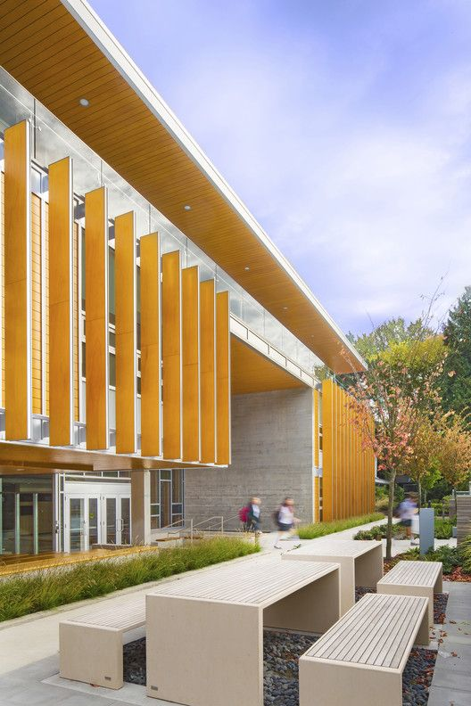
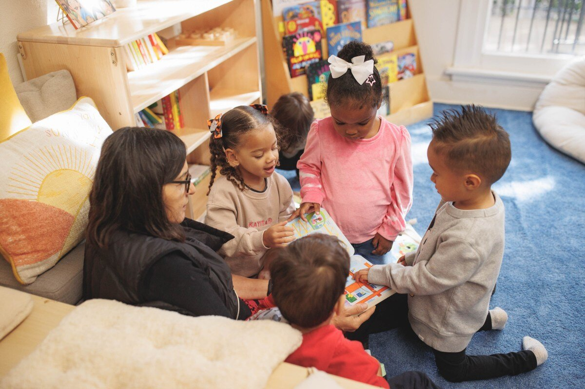
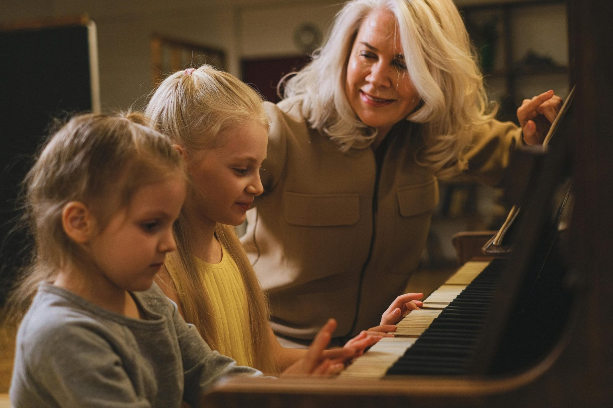
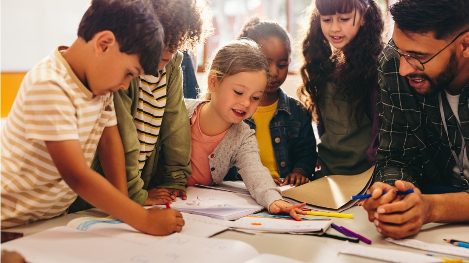

Fachada de la entrada principal de Untref School
Bienvenidos a Untref School, un instituto de educación primaria donde el aprendizaje se convierte en una experiencia enriquecedora y significativa. Nuestra misión es ofrecer a cada estudiante una educación de calidad, basada en el respeto, la creatividad y la construcción de valores que los preparen para el futuro.
Creemos que la escuela no solo es un espacio de enseñanza, sino un entorno donde los niños descubren su potencial y desarrollan habilidades esenciales para su crecimiento. Por eso, nos esforzamos en brindar un ambiente seguro, inclusivo y estimulante, donde cada alumno se sienta motivado para explorar, aprender y compartir con sus compañeros.
¿Por qué elegirnos?
Metodologías innovadoras: Combinamos estrategias tradicionales con enfoques modernos, integrando tecnología, proyectos interdisciplinarios y aprendizaje basado en la experiencia. Los niños no solo memorizan conceptos, sino que los aplican en situaciones reales.
Ambiente seguro e inclusivo: Creemos en una educación donde cada niño se sienta valorado y respetado. Fomentamos la diversidad, el trabajo en equipo y el desarrollo de habilidades socioemocionales que los preparan para interactuar en distintos ámbitos de la vida.

Actividades extracurriculares: Además del contenido académico, ofrecemos una variedad de actividades que enriquecen la formación de nuestros estudiantes. Desde talleres de arte y música, hasta deportes y programas de ciencias, brindamos oportunidades para que cada niño explore sus intereses y talentos.

Enfoque en el desarrollo personal: Más allá de los conocimientos, buscamos que cada estudiante adquiera habilidades de pensamiento crítico, resolución de problemas y autonomía. Los preparamos para enfrentar el futuro con confianza y creatividad.

Elegir UntrefSchool significa apostar por una educación que prioriza el bienestar y el desarrollo integral de los niños, garantizando un entorno propicio para su crecimiento académico y emocional.
Propuesta educativa
Educación personalizada:
En UntrefSchool, comprendemos que cada estudiante tiene su propio ritmo y estilo de aprendizaje. Por eso, implementamos estrategias pedagógicas diferenciadas, adaptando los contenidos y actividades según las necesidades individuales. Se emplean herramientas como tutorías especializadas y seguimiento personalizado para garantizar el desarrollo académico y emocional de cada alumno.
Integración de herramientas digitales:
La tecnología juega un papel clave en la educación moderna. Incorporamos pizarras digitales, plataformas interactivas y software educativo para que los estudiantes aprendan de manera dinámica. Además, promovemos el pensamiento computacional con nociones básicas de programación y seguridad en internet, preparándolos para los desafíos del futuro.
Desarrollo de habilidades socioemocionales:
Más allá del conocimiento académico, es fundamental que los niños aprendan a gestionar emociones y fortalecer sus relaciones interpersonales. Mediante actividades grupales, dinámicas de comunicación y talleres de inteligencia emocional, fomentamos valores como la empatía, el respeto y la colaboración, creando un ambiente armonioso dentro y fuera del aula.
Programa bilingüe:
El aprendizaje de un segundo idioma es una herramienta esencial en la formación académica. Desde los primeros años, los alumnos tienen acceso a un programa bilingüe con docentes especializados en inglés. Se emplean metodologías lúdicas e inmersivas que incluyen juegos, canciones, lectura y conversaciones para garantizar una experiencia natural y efectiva en el idioma.